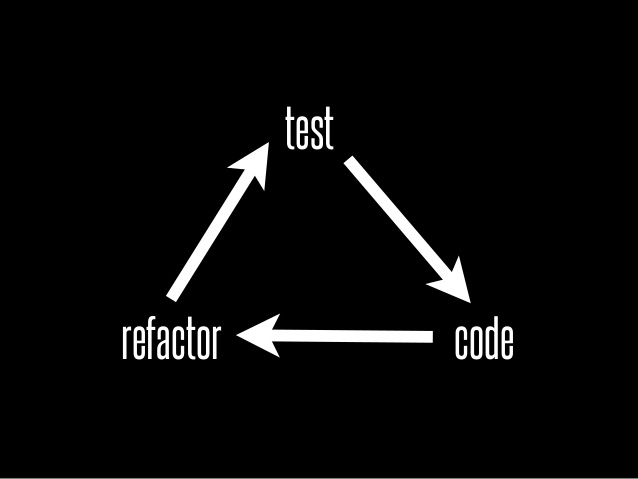
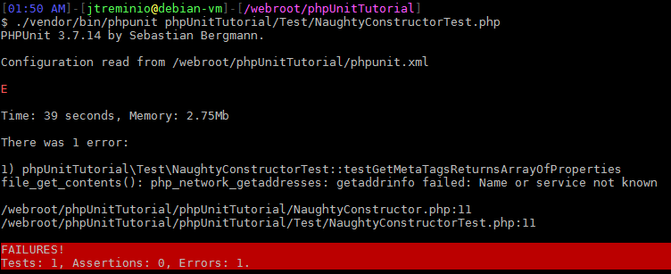
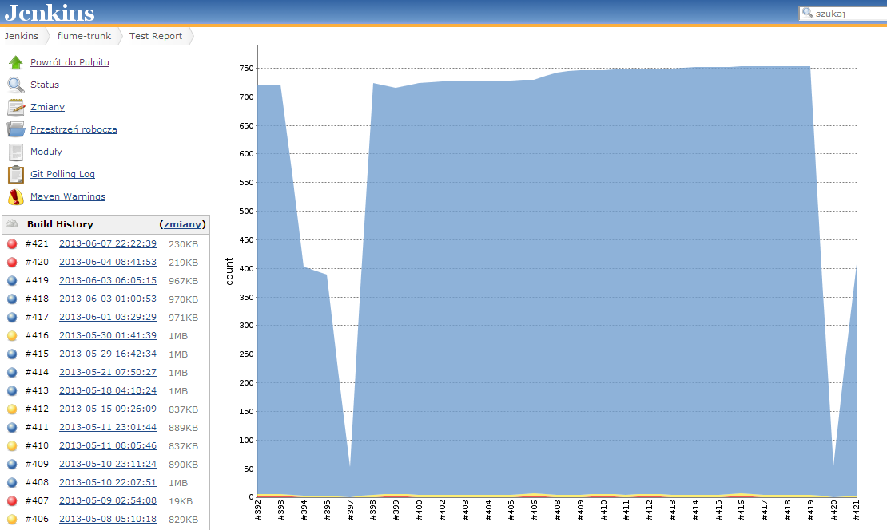

Unit Tests
Why not?!?
Created by Marcin Stanislawski (Interia.pl)
Testy zbędny wodotrysk programowania ...
- Nikt nam nie płaci za ich zrobienie
- Przełożeni nie dają nam na nie czasu ([czyt.] dedline przede wszystkim)
- "Odziedziczyłem ten kod po kimś - jest nie testowalny"
- Po co testować coś co jeszcze nie działa
- Trzeba zmarnować czas na nauczenie się TDD.
- Przecież piszę bez błędów :)
Może jednak warto...

Co to jest "ten" test???
class StackTest extends PHPUnit_Framework_TestCase
{
public function testPushAndPop()
{
$stack = array();
$this->assertEquals(0, count($stack));
array_push($stack, 'foo');
$this->assertEquals('foo', $stack[count($stack)-1]);
$this->assertEquals(1, count($stack));
$this->assertEquals('foo', array_pop($stack));
$this->assertEquals(0, count($stack));
}
}
Refactoring
Ten kod na pewno nie jest nigdzie używany...
Kod żyje (powinien) tak...
Aby kod był:
- Testowalny → Wszystkie testy wykonują się poprawnie
- Modularny → Usunięcie duplikacji
- Łatwy w analizie → Zwiększenie czytelności
- Prosty → Usunięcie złożoności
Refactoring kodu*

* - bez testów jednostkowych
Refactoring z testami
- wykonujemy testy - wszystkie "zielone"
- refactorujemy kod
- wykonujemy testy - i poprawiamy nasz kod dotąd aż nie będą "zielone"
Pewność że nic się przy okazji nie wysypało

Modularność kodu
Wiesz dokładnie
gdzie jest błąd

Reużywalność kodu
Brak duplikacji
Automatzacja testów
Dokumentacja
Testy doskonale nadają się do dokumentowania kodu
Nawet do zastąpienia DocBlock.
Przykład zestawu testów
class BankAccountTest extends PHPUnit_Framework_TestCase {
public function testBalanceIsInitiallyZero(){}
public function testBalanceCannotBecomeNegative(){}
}
Generowanie dokumentacji
phpunit --testdox BankAccountTest PHPUnit 3.7.0 by Sebastian Bergmann. BankAccount [x] Balance is initially zero [x] Balance cannot become negative
Testowanie na
pre-produkcji
Najlepiej testować na danych produkcyjnych!?!
(...)wymogi chociażby PCI DSS, narzucające sposób rozwoju oprogramowania dedykowanego instytucjom finansowym, zabraniają korzystania w trakcie developmentu z oryginalnych danych kart płatniczych(...)
(...) i co ciekawe, programiści potrafią stworzyć oprogramowanie z takim ograniczeniem — jak oni to robią? :-)
TDD
- Piszemy test sprawdzający dodawaną funkcjonalność. Test w tym momencie zwraca błąd.
- Implementujemy funkcjonalności. W tym momencie napisany test powinien się udać.
- Refaktoryzacja napisanego kodu, aby spełniał oczekiwane standardy.

Agile without TDD is like cinema without popcorn.
BDD
Feature: Your first feature
In order to start using Behat
As a manager or developer
I need to try
Scenario: Successfully describing scenario
Given there is something
When I do something
Then I should see something
Feature: Your first feature In order to start using Behat As a manager or developer I need to try Scenario: Successfully describing scenario Given there is something When I do something Then I should see something